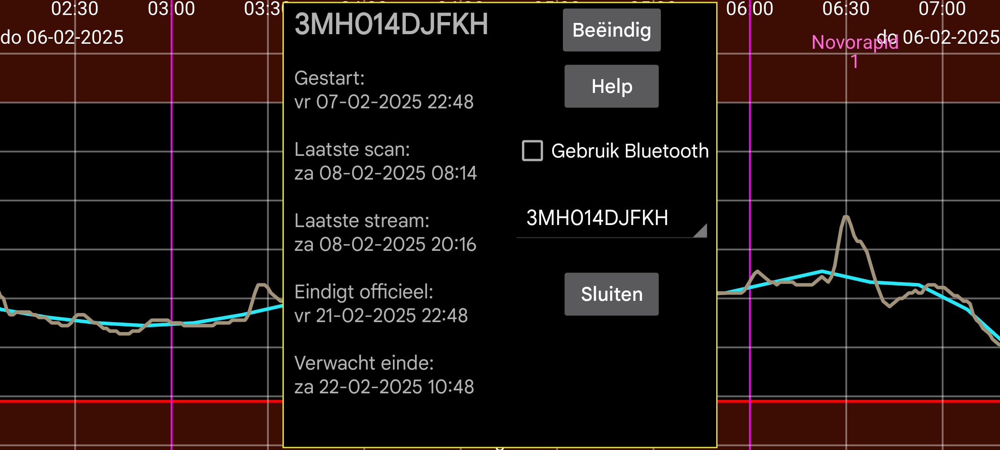

ar de es hi it ja ko nl pl ru tr uk uz en
Geeft informatie over de sensoren wanneer Juggluco fungeert als kloon van de streamwaarden:
Gestart: tijdstip waarop de sensor is gestart. Bij Libre-sensoren is dit één uur vóór de eerste glucosewaarden.
Laatste scan: Laatste keer dat de sensor is gescand. Ook wanneer de sensor wordt gescand zonder gegevens te ontvangen vanwege een sensorfout of sensorvervangingsfout, wordt dit geteld als gescand.
Laatste stream: Tijdstempel van de laatste glucosemeting ontvangen via Bluetooth;
Eindigt officieel: Eindtijd zoals aangegeven door de sensorproducent.
Verwacht einde: Sommige sensoren gaan in werkelijkheid langer mee dan de officiële eindtijd. Libre 1 en 2 en Dexcom G7/ONE+ gaan 12 uur langer mee, Sibionics-sensoren gaan bijna 10 dagen langer mee. Alleen Libre 3-sensoren gaan niet langer mee dan hun officiële eindtijd.
Verbergen: Aangevinken verbergt deze curve. Behalve door het vinkje weg te halen, kun je de curve ook weer zichtbaar maken door rechtsonder op het scherm op “Zichtbaar” te drukken.
Beëindig: Stop met het ontvangen van glucosewaarden via Bluetooth van deze sensor. Wanneer je deze weer wilt gebruiken, moet je de sensor opnieuw scannen.
Gebruik Bluetooth: verbind dit apparaat rechtstreeks via Bluetooth met de sensoren. Je kunt dit gebruiken om te wijzigen welk apparaat rechtstreeks verbinding maakt met de sensoren. Het moet worden uitgeschakeld in het andere apparaat dat eerder rechtstreeks verbinding maakte met de sensor. Je moet ook de Kloon-instellingen op beide apparaten wijzigen, zodat Stream- waarden in de tegenovergestelde richting worden verzonden. Wanneer de andere kant een WearOS-horloge is, kun je dit alles doen met één enkele knopdruk: Linkermenu → Horloges → WearOS-config → "Directe sensor-horlogeverbinding".
Wanneer je meerdere sensoren tegelijkertijd gebruikt, kun je selecteren van welke sensor je de informatie wilt bekijken.
Kalibraties: Als je het bloedglucoselabel hebt opgegeven in linkermenu→Instellingen→Kalibratie en bloedglucosemetingen hebt ingevoerd via linkermiddenmenu→Hoeveelheid, die niet zijn uitgesloten, kun je op de knop “Kalibraties” drukken om een lijst met uitgevoerde kalibraties te krijgen. Zie: https://www.juggluco.nl/Juggluco/index.html#calibration
Opwarmen: Voor Sibionics- en Linx/Lumiflex/Aidex X-sensoren kun je het aantal minuten van de opwarmperiode wijzigen. Alle functies negeren gegevens tijdens de opwarmperiode: de curve op het scherm, statistieken, geëxporteerde gegevens en gegevens die zichtbaar zijn op de webserver. Ook met terugwerkende kracht.